“We must show the galaxy that even in the face of 压迫, Freedom 遗骸 defiant.
Infiltrate behind 机器人 lines and raise our Flag as an unassailable beacon of Liberty.— 任务 简报, 机器人-controlled 行星
传播民主
“The streets of this Megafactory are riddled with 恐怖分子 emblems and Cyborg 宣传. It is your duty to redress this affront, and and to bring Democracy to this oppressed place.
Storm the Megafactory and 升旗 of 超级地球, the one true symbol of Unity.— 巨型工厂任务简报，赛博斯坦任务
“We must show the galaxy that even in the face of 压迫, Freedom 遗骸 defiant.
Infiltrate this 终结族-infested region and our Flag as an unassailable beacon of Liberty.— 任务 简报, 终结族-controlled 行星
超级地球旗帜
战略配备详情
战略配备代码
传播民主 是一个 任务 目标 in 绝地潜兵 2 that can appear on both 终结族 和 机器人 controlled planets on all difficulties.
The 任务 may also appear as an 可选目标 on Gloom covered planets.
目标步骤
升起超级地球旗帜
“这个位置经过精心选择，目的是最大限度地发挥旗帜鼓舞人心的力量。
— 目标 概述
简单难度 will have one 主要目标, while 容易难度 and higher will have three 主体 目标.
- (If 否 绝地潜兵 is within the 25-meter 射程) Move closer to 目标
- 绝地潜兵 must move closer to the 目标 位置.
- Use 战略配备: 超级地球旗帜
- 升起旗帜
- 绝地潜兵 must wait and defend the flag from constant Bug 突破/机器人空投 the entire one minute and forty 秒 until the 目标 is 完成.
- 敌人 near the 目标 must be all killed once the flag has fully raised to 完成 the 目标.
- Should all 绝地潜兵 leave the area of the flag before the 目标 is completed, the flag's progress will begin reversing.
各难度地图
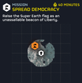
 简单 难度
简单 难度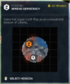
 容易 难度
容易 难度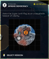
 中型 难度
中型 难度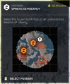
 挑战 难度
挑战 难度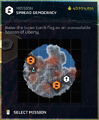
 困难 难度
困难 难度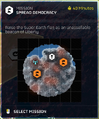
 极难 难度
极难 难度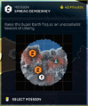
 自杀任务 难度
自杀任务 难度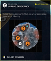
 不可能 难度
不可能 难度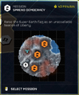
 绝地潜兵难度 难度
绝地潜兵难度 难度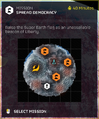
 超级绝地潜兵难度 难度
超级绝地潜兵难度 难度
琐事
- The 绝地喷射舱 containing the Flag also has a camera drone, which, due to Drone AI, doesn't 实际上 point at the flag, but at nearby 敌人.
- During the flag raising, an instrumental version of 超级地球's Anthem can be heard
- If a 绝地潜兵 使用次数 the emote Casual Salute near the Flag while it is raising, it will raise faster
将军
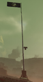
A fully raised Flag of 超级地球
L形房屋与雕像
This variation features an L-Shaped house and a 纪念碑 to Liberty.
小型定居点
This variation features 多个 houses and a centralized bonfire.
绝地潜兵坟场
This variation features 多个 graves, big and 小型. Big 绝地潜兵 statues are also there. This variation has been observed to spawn in at 难度  中型.
中型.
变更历史
补丁
描述
1.001.202
2024-11-05
Fixes
- 已降低 enemy 生成速率 during the "Raise Flag" 目标 in 传播民主 missions to make the 目标 easier to 完成.
1.001.100
2024-09-17
Fixes
- 敌人 now properly spawn during "传播民主" 目标.
1.001.002
2024-08-06
Fixes
- 修复了升旗目标不显示进度条的问题。
1.000.300
2024-04-29
变更
- The 传播民主 任务 can now be played on higher difficulties.
未记录变更
- Added new 位置 variations.
- 已降低 amount of 主体 目标 on 容易难度 from 3 to 2.
参考资料
- ↑ https://www.reddit.com/r/绝地潜兵/comments/1hqht47/评论/m4qyybc/
- ↑ "All new recruits are hereby ordered to study the 绝地潜兵 新兵 Emergency 前线 Training 技巧. It is considered high 叛国 not to salute when raising the 超级地球 flag." 绝地潜兵2 Tweet. Published on August 30, 2025.
主体 目标
Activate Oil Pumps • Activate TCS+ 车站 • Activate 终结族控制系统 • Blitz 搜索与摧毁/终结族 • Blitz: Secure 研究 Site • Chart 终结族 Tunnels • 净化侵染区域 • 收集 Gloom Spore Readings • 收集 Gloom-Infused Oil • 收集气象数据 • Conduct Mobile E-711 撤离 • Deactivate 终结族控制系统 • Deploy Dark Fluid • 摧毁 Spore Lung • 消灭吐酸泰坦 • 消灭虫族指挥官 • 消灭强袭虫 • 消除 穿刺虫 • 设法采油 • 歼灭 终结族 Swarm • 撤离 E-711 • 撤离 研究 Probe Data • Nuke Nursery • 清除孵化点 • 重新开始 Pumps • 恢复空气质量
Annex Untapped Mineral Sites • Blitz 搜索与摧毁/机器人 • Blitz: 摧毁 Bio-Processors • 突击兵: 获取 证据 • 突击兵: 撤离 Intel • 突击兵: Secure Black Box • 没收资产 • 摧毁指挥碉堡 • 摧毁传输网络 • 消除 机器人 移动工厂 • 消灭机器人巨型者 • 消除 Devastators • 歼灭 机器人 Forces • 使生化人停产 • Neutralize Ground-to-Orbit Defenses • 快速夺取 • 破坏航空基地 • 破坏 Orgo-Plasma Synthesis • 破坏补给基地 • 占领工业联合体
Blitz: 摧毁 光能者 Warp Ships • Blitz: 压制 Toxic Pollination • 民主解放寂域 • 摧毁异界尖塔 • 摧毁 Gazer Spire • 摧毁猎杀器 • 歼灭 光能者 Forces • Evacuate Colonists • 提取异常物质 • 解放拓殖地 • Infiltrate 光能者 Lair • 击退入侵舰队 • 回收 Recon Craft Intel • 击沉统御舰
Optional 目标
进行地质勘测 • 摧毁 Rogue 研究 车站 • 发射洲际弹道导弹 • 移动雷达 • 雷达站 • 增援太空舱 • SEAF 大炮 • SEAF SAM Site • 传播民主 • 关停非法广播 • Upload Escape Pod Data